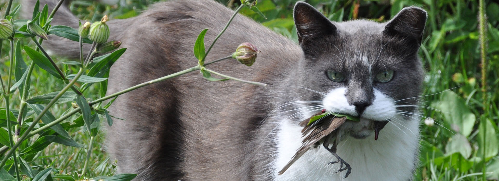
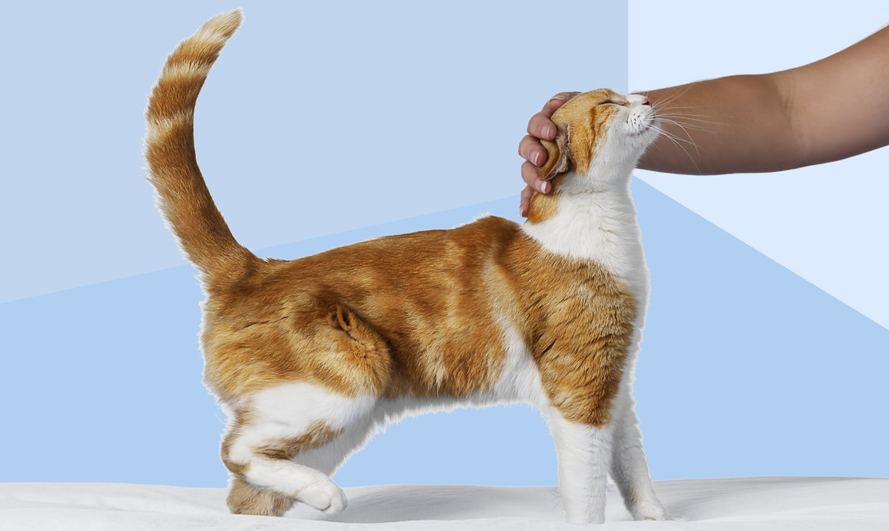

Anthrozoologist John Bradshaw insists that cats really aren't terribly domesticated and think that humans are the same species as them, but oddly "non-hostile."
It had quite slipped my notice, but I'm actually a cat.

It's true that I struggle with the running-up-and-down-drainpipes thing. I'm also not very adept at catching mice, without considerable chemical help.
On the other hand, I'm good at eating cheese and I can drink milk very quietly. Perhaps that's why my friend Ed's cat Bob thinks I'm also a cat.
Bob hasn't told me himself, but a British anthrozoologist named John Bradshaw has. In a book called Cat Sense, which the New York Times kindly reviewed last week, Bradshaw insists that despite being happy lying over your warm laptop keyboard and starring in any number of YouTube videos, cats are essentially still wild.
He's been studying cats for 30 years and he insists that because they were never bred to play some specific role in the domestic life of humans, they didn't go through some radical evolutionary change.

Yes, many have been domesticated in their way, but equally, many go out and breed with wild cats out there in the trees and bushes. (Bradshaw estimates that 85 percent of kitten births have a wild element.) Many get neutered, so the wild ones are all the lady cats have on offer.
Bradshaw is worried about the cat population. He writes that "cats now face possibly more hostility than at any time during the last two centuries." He sees them as predators who have had their day. He also doesn't appreciate the damage he sees done to them by pedigree breeders.
Here's the important part, though: Cats think you're just a a slightly big, dumb non-hostile cat. Quite specifically, he says that they treat humans as if they were their Mama Cat.
All that rubbing up against you with their tails up is apparently no more than a hopeful check that you really are just another big, fat, slovenly cat who doesn't intend to eat them with their Welsh Rarebit.
No, they have absolutely no idea about nuclear war and apparently no clear sense that we might be some other species, despite not quite having the strokably hairy torsos they enjoy.
We also don't have their technical ability to turn our bodies into parachutes when falling from a tall building -- something Bradshaw explains cats are rather good at.
Given that he believes cats are semi-feral and that they think we are cats too, we must surely consider that cats aren't all that stupid -- because they must realize that we are, in fact, quite that stupid.
Perhaps they really do observe that we behave in ways not dissimilar to their own. They watch us wander around, hunt purposelessly and bring home a ton of KFC.
"Oh, I see he caught some of those funny orange mice again today," Bob must think.